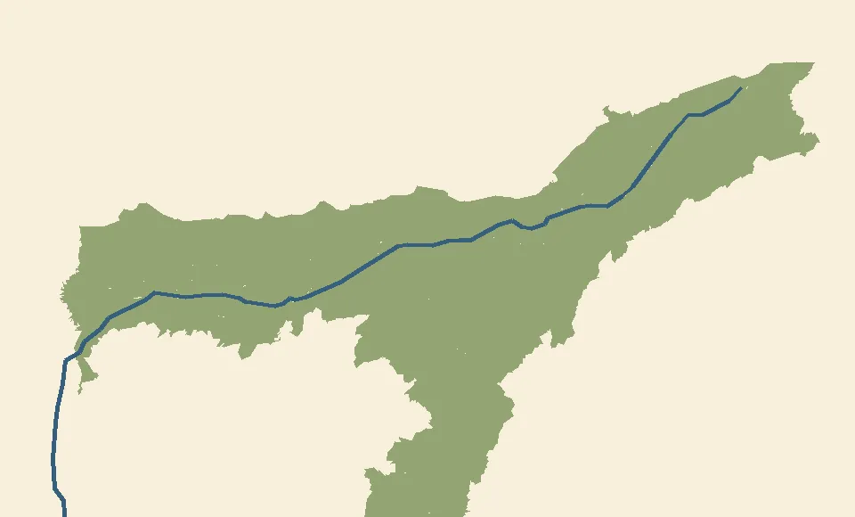

Rebuild the Assam atlas অসমৰ মানচিত্ৰ পুনৰ সাজা
Use paper or the space below. Before Mission 1, spend five minutes on prompts 1–4 and save your answers. After Mission 6, spend ten minutes on all eight prompts, then compare with your first attempt.
কাগজ বা তলৰ ঠাই ব্যৱহাৰ কৰা। প্ৰথম অভিযানৰ আগতে ১–৪ নম্বৰ প্ৰশ্নৰ বাবে পাঁচ মিনিট লৈ উত্তৰ ৰাখা। ষষ্ঠ অভিযানৰ পাছত আঠোটা প্ৰশ্নৰ বাবে দহ মিনিট লোৱা। তাৰ পাছত প্ৰথম উত্তৰৰ সৈতে তুলনা কৰা।

North is up. Blue marks the Brahmaputra. উত্তৰ ওপৰত। নীলাই ব্ৰহ্মপুত্ৰ দেখুৱায়।
Before and after আগতে আৰু পাছত
- Point to or describe the location of the Barak Valley. বৰাক উপত্যকাৰ অৱস্থান দেখুওৱা বা বৰ্ণনা কৰা।
- Place Dibrugarh and Guwahati in downstream order. ডিব্ৰুগড় আৰু গুৱাহাটী উজনিৰ পৰা নামনিলৈ সজোৱা।
- What does a higher observed inundation frequency tell you about a mapped location? অধিকবাৰ প্লাৱন দেখা পোৱা শ্ৰেণীয়ে মানচিত্ৰৰ ঠাই এখনৰ বিষয়ে কি কয়?
- A market is outside the observed flood zone, but its road crosses it. Explain what the road adds to your assessment. বজাৰখন পানী উঠা অঞ্চলৰ বাহিৰত, কিন্তু ৰাস্তাটো অঞ্চলৰ মাজেৰে যায়। ৰাস্তাৰ তথ্যই তোমাৰ মূল্যায়নত কি যোগ কৰে?
Fresh prompts after the course পাঠ্যক্ৰমৰ পাছত নতুন প্ৰশ্ন
- Place the central uplands relative to the two valleys. উপত্যকা দুখনৰ তুলনাত মাজৰ ওখ অঞ্চলৰ অৱস্থান দেখুওৱা।
- You face downstream on a reach flowing due west. On which side is north? সোঁত পোনে পোনে পশ্চিমলৈ যোৱা অংশত নামনিৰ ফালে মুখ কৰিছা। উত্তৰ কোনফালে?
- A field is underwater during high water but visible again at comparable low water. Which process does this observation show? পানী বাঢ়িলে পথাৰ ডুবিল, কিন্তু পানী আগৰ দৰে কমিলে পুনৰ দেখা গ’ল। ইয়াত কোনটো প্ৰক্ৰিয়া দেখা গৈছে?
- Two sites have equally convenient roads. Name one independent map layer that could distinguish them and explain how. দুটা ঠাইৰ ৰাস্তা সমানে সুবিধাজনক। সিহঁতক পৃথক কৰিব পৰা আন এটা মানচিত্ৰ স্তৰ আৰু তাৰ কাৰণ কোৱা।
Copy or print your answers before leaving this page. এই পৃষ্ঠাৰ পৰা ওলোৱাৰ আগতে উত্তৰ নকল বা প্ৰিণ্ট কৰি ৰাখা।
Answer key and scoring · উত্তৰ আৰু নম্বৰ
- Southern Assam, south of the central uplands. দক্ষিণ অসমত, মাজৰ ওখ অঞ্চলৰ দক্ষিণত।
- Dibrugarh → Guwahati. ডিব্ৰুগড় → গুৱাহাটী।
- Inundation was observed more often during the mapped period. মানচিত্ৰত ধৰা সময়ত তাত অধিকবাৰ পানী উঠা দেখা গৈছিল।
- Flooding along the road can interrupt access even when the market site is dry. বজাৰ শুকান থাকিলেও ৰাস্তাত পানী উঠিলে যাতায়াত বন্ধ হ’ব পাৰে।
- Between the Brahmaputra and Barak valley plains. ব্ৰহ্মপুত্ৰ আৰু বৰাক উপত্যকাৰ সমভূমিৰ মাজত।
- Right. সোঁফালে।
- Temporary inundation. অস্থায়ী প্লাৱন।
- For example, a flood layer could show that one site or its access route crosses an area inundated in the mapped record. উদাহৰণস্বৰূপে, বান স্তৰে দেখুৱাব পাৰে যে এটা ঠাই বা তাৰ ৰাস্তা নথিভুক্ত প্লাৱন অঞ্চলত পৰিছে।
Give one point per independently correct first answer. Compare prompts 1–4 before and after. At the end tally locating (1, 5), interpreting (2, 3, 6, 7), and explaining (4, 8) separately.
প্ৰথমবাৰ নিজে দিয়া প্ৰতিটো শুদ্ধ উত্তৰত এক নম্বৰ দিয়া। আগৰ আৰু পাছৰ ১–৪ নম্বৰ উত্তৰ তুলনা কৰা। শেষত অৱস্থান (১, ৫), অৰ্থ বুজা (২, ৩, ৬, ৭) আৰু ব্যাখ্যা (৪, ৮) পৃথককৈ গণনা কৰা।
Five-minute memory checks পাঁচ মিনিটৰ স্মৃতি অনুশীলন
Return on days 1, 3 and 7. Answer before opening the key and record each first attempt separately from your course score. ১, ৩ আৰু ৭ দিনৰ পাছত ঘূৰি আহা। উত্তৰ চোৱাৰ আগতে নিজে লিখা আৰু প্ৰথম উত্তৰৰ নম্বৰ পাঠ্যক্ৰমৰ নম্বৰৰ পৰা পৃথককৈ ৰাখা।
Day 1 প্ৰথম দিন
- Starting in the Brahmaputra Valley, cross the uplands to the other valley. In which general direction did you travel? ব্ৰহ্মপুত্ৰ উপত্যকাৰ পৰা ওখ অঞ্চল পাৰ হৈ আনখন উপত্যকালৈ গ’লা। সাধাৰণতে কোন দিশে গ’লা?
- A boat goes from Guwahati to Dibrugarh. Is it going with or against the main flow? নাও এখন গুৱাহাটীৰ পৰা ডিব্ৰুগড়লৈ যায়। ই মূল সোঁতৰ দিশত নে বিপৰীত দিশত গৈছে?
Day 3 তৃতীয় দিন
- Two images show the same low-water stage. One shows a narrower strip of land along the bank. What process could explain this? দুখন ছবিত পানী সমানে কম। এখনত পাৰৰ মাটিৰ পটি ঠেক। কোনটো প্ৰক্ৰিয়াই এই সলনি বুজাব পাৰে?
- A freshwater lake southwest of Guwahati occupies an old river channel. Name it. গুৱাহাটীৰ দক্ষিণ-পশ্চিমত পুৰণি নদীখাতত এটা মিঠাপানীৰ হ্ৰদ আছে। নামটো কোৱা।
Day 7 সপ্তম দিন
- A mapped market site and its entire road both stay outside the observed inundation area. What does this establish for the scenario, and what would you still need to know about future floods? মানচিত্ৰত বজাৰ আৰু তাৰ সম্পূৰ্ণ ৰাস্তা পানী উঠা অঞ্চলৰ বাহিৰত আছে। এই উদাহৰণত ইয়াৰ পৰা কি বুজিবা আৰু ভৱিষ্যতৰ বানৰ বিষয়ে কি জানিবলৈ বাকী?
- What additional layer would you consult to find where cargo can transfer from the Barak waterway to a truck? বৰাক জলপথৰ পৰা ট্ৰাকলৈ সামগ্ৰী ক’ত তুলিব পাৰি জানিবলৈ কোনটো অতিৰিক্ত স্তৰ চাবা?
Memory check answers · স্মৃতি অনুশীলনৰ উত্তৰ
Day 1. Broadly south. Against the flow, upstream. প্ৰথম দিন। মুঠামুটিকৈ দক্ষিণলৈ। সোঁতৰ বিপৰীত দিশত, উজনিলৈ।
Day 3. Bank erosion. Deepor Beel. তৃতীয় দিন। পাৰ খহা। দীপৰ বিল।
Day 7. The site and road meet the scenario’s two conditions. Future flood extent requires additional evidence. A local map showing landings and connecting roads would help identify transfer points. সপ্তম দিন। ঠাই আৰু ৰাস্তাই উদাহৰণৰ দুয়োটা চৰ্ত পূৰণ কৰে। ভৱিষ্যতৰ বান কিমান দূৰলৈ যাব জানিবলৈ আৰু প্ৰমাণ লাগে। নাওঘাট আৰু সংযোগী ৰাস্তা দেখুওৱা স্থানীয় মানচিত্ৰই সামগ্ৰী তোলা ঠাই চিনিব পাৰে।